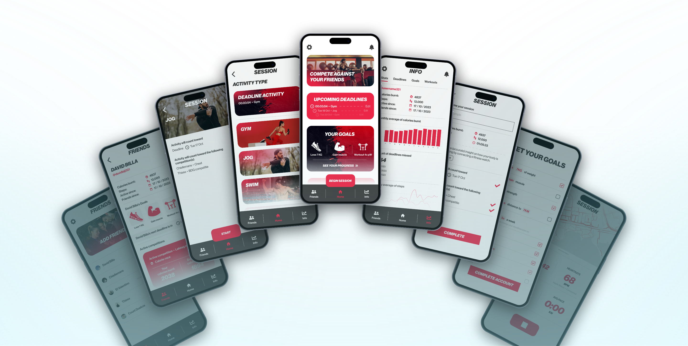
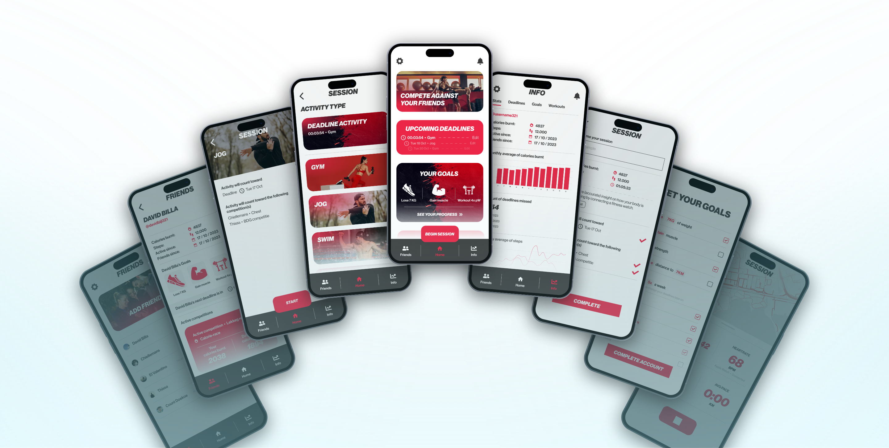
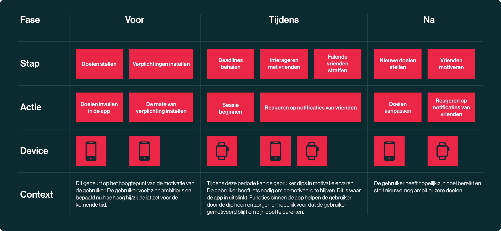
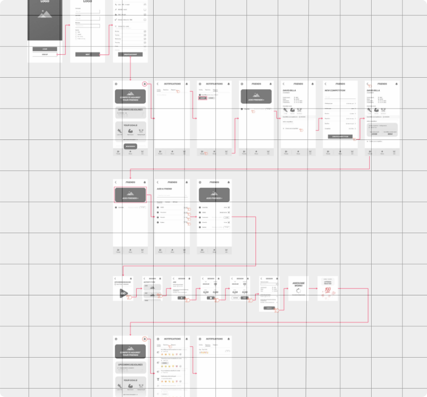
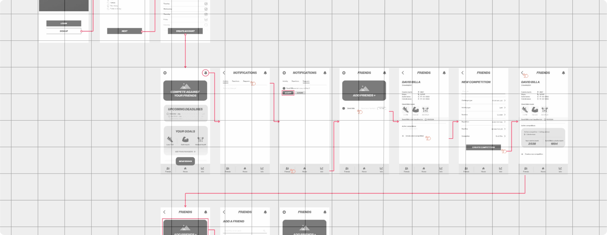

Case study
LOCK IN
UX/UI design
Understanding UI/UX principles is crucial as a front-end developer. It helps me make sure designs work smoothly for the user, creating user-friendly experiences. In other words, mastering UI/UX principles enables me to build websites and apps that users love. This project highlights my ability to apply UI/UX principles and progress from concept to high-fidelity design. It also demonstrates my reliance on grounded research and iterative processes in decision-making.
Briefing
Think of a concept that fosters a connection between different devices. Start by conceptualising the idea and then move towards creating a detailed, high-fidelity design. All while utilising UI/UX strategies throughout. The difficulty here lies in establishing a meaningful connection between devices. The aim is not to simply translate your design to a different screen format, but instead find a valuable reason for users to use your app across different devices.
CONCEPT
‘Lock In’ is a fitness app designed to boost motivation for users prone to losing steam. It achieves this through social accountability. Users engage with friends; when someone finishes a workout, friends receive notifications. Similarly, missed workouts trigger notifications.
The concept is simple: users feel committed to themselves, motivated by not wanting to disappoint friends. This concept forms the basis of the app and is what creates the connection between smart watch and phone later on. But first, I needed to understand the user.
USER JOURNEY
USER REQUIREMENTS
Must have
Een manier om verschillende activiteiten op te nemen.
Must have
Een manier om interactie te zoeken met vrienden binnen de app.
Must have
Een manier om vrienden te straffen mits zij niet voldoen aan hun doelen.
Should have
Een manier om vrienden te straffen mits zij niet voldoen aan hun doelen.
Nice to have
Een manier om vrienden te straffen mits zij niet voldoen aan hun doelen.
WIRESCREENS + FLOW
After finishing the research phase and refining the concept to its current state, it was time to begin visualizing the features and their general flow. I do this by creating wireframes and constructing a wireflow. The wireflow outlines a potential path that users might take when using the app for the first time.
 Click the image above to check out the full wireflow in more detail. It starts in the top left and progresses all the way down to the bottom. This link will take you to an external website called Miro.
FINAL PRODUCT
Once the wireflow was finished, I further built upon my design based on feedback from peers and my own intuition. After several iterations and new screens, the product was complete!
For design choices, I stuck to an energetic red color theme. Additionally, I emphasized the 'react to your friends' aspect of user interaction by expanding on the existing notification system. To view the final flow, click here.
RESEARCH
ME-FI
HI-FI